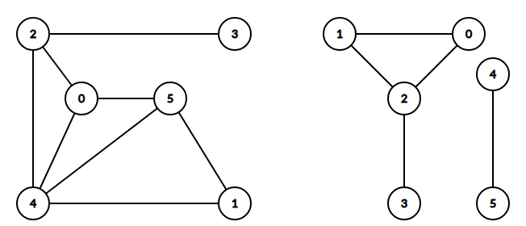

An undirected graph is said to be connected if any node is reachable from any other node by traversing one or more edges. Below you can see two graphs: the one on the left is connected, while the one on the right is not.
If we take a closer look at the second graph, we can see that the nodes 00, 11, 22 and 33 form a separate component, while the nodes 44 and 55 form another one. In each of these two components there is a path between every two nodes. This kind of subset of nodes is called a connected component.
The problem of traversing a graph refers to visiting all the nodes in a particular order, usually computing some other useful information along the way. The most common algorithms used for graph traversal are the BFS (breadth first search) and the DFS (depth first search).
The depth-first search, or in short, DFS, traverses all the nodes that are reachable from a starting node. This algorithm is quite easy to understand and implement, making it a top option when trying to check if a graph is connected or not:
An undirected graph is said to be connected if any node is reachable from any other node by traversing one or more edges. Below you can see two graphs: the one on the left is connected, while the one on the right is not.
If we take a closer look at the second graph, we can see that the nodes 00, 11, 22 and 33 form a separate component, while the nodes 44 and 55 form another one. In each of these two components there is a path between every two nodes. This kind of subset of nodes is called a connected component.
The problem of traversing a graph refers to visiting all the nodes in a particular order, usually computing some other useful information along the way. The most common algorithms used for graph traversal are the BFS (breadth first search) and the DFS (depth first search).
The breadth-first search algorithm, or in short, BFS, is one of the most common algorithms used to determine if a graph is connected or not. The steps of the BFS are the following: